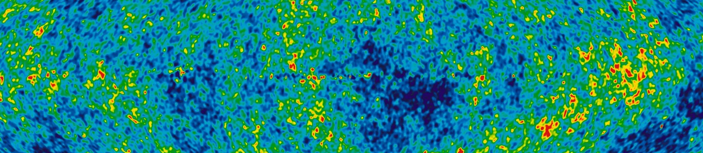

Work & contributions

Simons Observatory · Overview
An introduction to the Cosmic Microwave Background (CMB) and the Simons Observatory (SO) — covering the history of the universe, what CMB telescopes observe, and SO's key science goals.